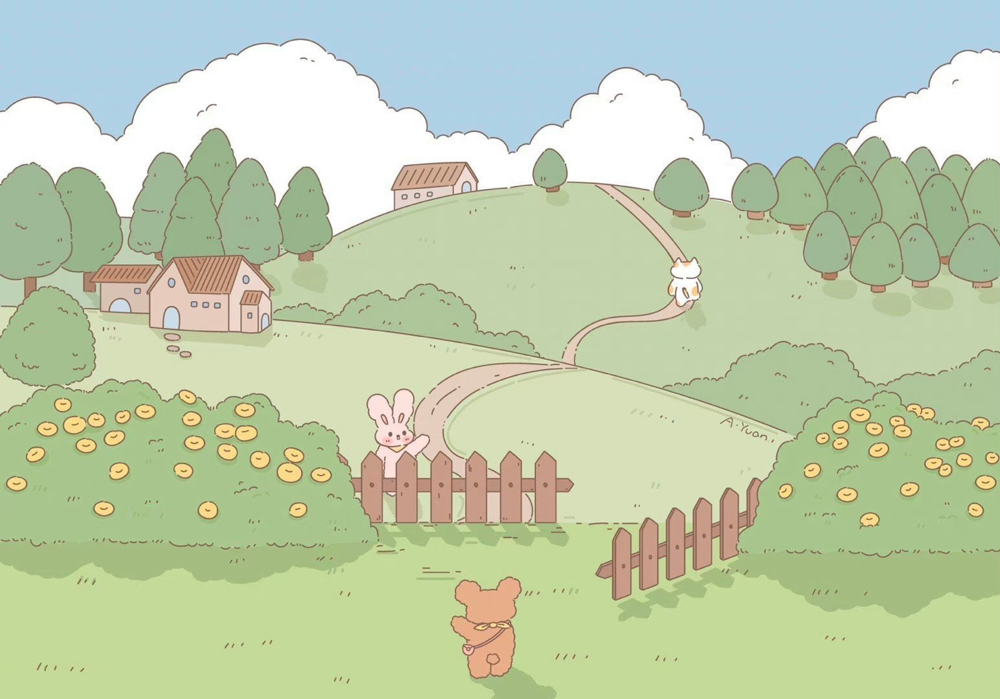

마이페이지에 오신 것을 환영합니다
안녕하세요.저는 영남대학교 시각디자인학과의 학생입니다. 저의 나이는 20살입니다.나는 사람들과 교류하는 것을 좋아하고 타인의 의견을 잘 들어주며 자신의 경험을 공유하는 것을 좋아합니다.내가 보기에 팀워크는 성공의 열쇠이며 모든 사람은 자신의 장점을 최대한 발휘하여 함께 임무를 완수해야 합니다. 나는 운동도 좋아하는데 특히 배드민턴은 건강도 유지하고 자신감도 생기게 해.나는 대인관계 능력이 강하고 좋은 대인관계를 가지고 있습니다.나는 의사소통과 조정을 잘해서 여러 가지 복잡한 상황을 잘 처리할 수 있어요.업무 중에 나는 항상 최선을 다하고 지속적인 개선을 추구합니다.
나의 취미
저는 한국어 노래를 많이 듣는 것을 좋아합니다. 스트레스를 받을 때 즐거운 노래를 들으면 고민이 많이 줄어들고 삶에 영감을 주기도 합니다. 시끄러운 음악을 들으면 기운이 빠지거나 졸릴 때 우리는 더 활기차게 변합니다.덕질하는 것이 취미이고 아이돌의 힘은 삶에 더 활기차고 희망을 갖게 합니다.주말에는 가끔 여행을 가서 신선한 공기를 마시고 새로운 것들을 접하며 친구들과 모임을 자주 갖습니다. 왜냐하면 친구들과 함께 있으면 편안하고 즐겁기 때문입니다. 나는 삶을 매우 사랑하기 때문입니다.저의 성격은 내성적이어서 공공장소에서는 대부분 조용하고 말이 적은 편이지만, 놀면서 다른 사람의 이야기를 듣는 것을 좋아하고, 다른 사람의 이야기를 많이 들어주는 것도 제가 다른 것에 대해 새로운 생각을 하게 합니다.서로 다른 사람을 대할 때도 자신만의 사회적 방식이 있습니다.
나의 일상 생활
배드민턴
잡지를 읽다
여행을 떠나다

바다를 보다